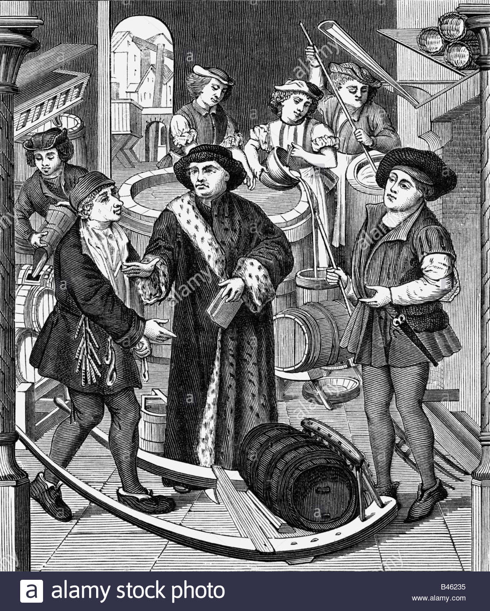
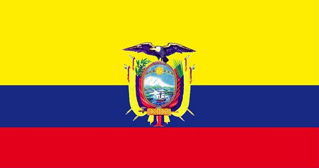

Historia de la Cerveza
La cerveza es uno de los productos más antiguos de la civilización. Los historiadores creen que existe
desde el año 10.000 a.C. En España se han encontrado restos en Soria aproximadamente del año 4.000 a.C.
Antiguedad:
En la antigüedad, los chinos elaboraban cerveza llamada "Kiu" utilizando cebada, trigo, espelta, mijo y
arroz. Mientras que las civilizaciones precolombinas de América, utilizaban maíz en lugar de cebada.
De manera similar, en la antigua Britania se elaboraba cerveza a base de trigo malteado antes de que los
romanos introdujeran la cebada.
Egipcios:
Los egipcios elaboraban la cerveza a partir de panes de cebada poco cocidos que dejaban fermentar en agua.
La llamaban "zythum" que significaba vino de cebada.

En la Edad Media, fue en Bélgica, en donde los monjes refinaron el proceso prácticamente hasta la perfección
e institucionalizaron el uso del lúpulo, planta canabacea que confiere a la cerveza su sabor amargo característico,
a la vez que favorece la conservación.
Cerveza Artesanal:
Definición:
Como su nombre lo indica, la cerveza artesanal es aquella que está elaborada siguiendo una “receta”
propia, por maestros cerveceros que le dan un sabor distinto y personal; por lógica su producción es
limitada, ya que se pone especial atención en sabores, ingredientes
y texturas distintas a las marcas industriales.
No se utilizan cereales de relleno (aditivos) como el maíz o el arroz, sin preservantes, ni colorantes
artificiales; prácticas que reducen la calidad y el perfil de sabor y aroma final del producto.
La cerveza artesanal es elaborada en pequeñas cantidades y por lo tanto, se le da máxima atención a
cada pequeño detalle, asegurando un producto final de la mayor calidad y frescura. Gran parte del proceso
se realiza de forma manual .
Cerveza Artesanal - Ecuador

Como en Estados Unidos, en Europa y otros países de la región, en Ecuador la cerveza artesanal se ha
convertido en una tendencia, aunque su nivel de consumo no suponga ni de lejos una amenaza para el gigante
ecuatoriano, la Cervecería Nacional (de SAB Miller), productora de Pilsener y Club, las dos marcas omnipresentes
en el mercado.
En Ecuador, si se trata de alcohol, la cerveza es la bebida favorita de la gente, según una encuesta.
Todos en el algún momento probamos esta bebida que se reconoce en nuestra cultura como la “biela”.
No solo se trata de beberla, la biela establece una conexión profunda con nuestros amigos y enemigos y a pesar de
su popularidad pocos la conocen bien, aunque se han hecho museos en su nombre el proceso que tiene que pasar antes
de saborear su espuma de un sorbo es desconocido.
Cerveza Artesanal Cuenca
Uno de los emprendimientos en Cuenca en su gran mayoría manejado por jóvenes es la cerveza artesanal. Son amigos o
familiares que han instalado pequeñas plantas procesadoras, varias a base de sus ahorros y aún no generan grandes utilidades,
aunque tampoco trabajan a pérdida.
Se enfrentan a la competencia fuerte de la fabricación industrial, pues aunque son artesanales ellas también pagan costos de
producción, sueldos y servicios básicos, tributan al fisco y cancelan lo referente a permisos sanitarios, de funcionamiento y más.
El negocio de la cerveza artesanal se va publicitando más por el boca a boca y a través de redes sociales, precisamente por su
limitado presupuesto.
Entre los maestros cerveceros dueños de estos emprendimientos en el austro casi todos se conocen y han generado una competencia saludable,
sus precios varían con centavos. Producen a pequeña escala, casi todos tienen otras profesiones, la cerveza no es su principal fuente de trabajo.